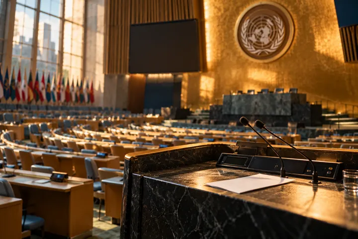
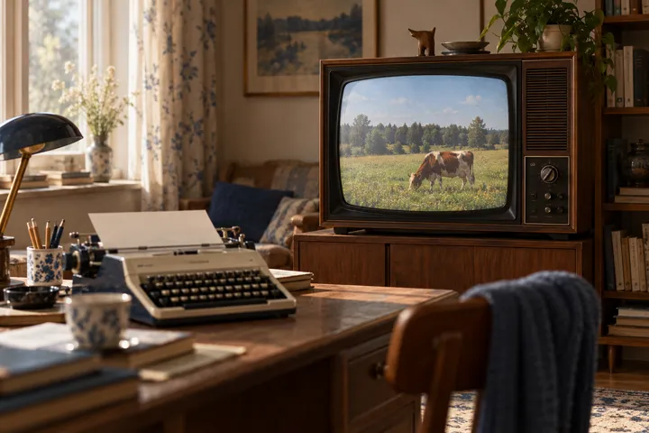
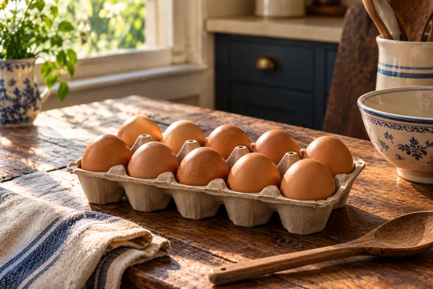

← На главную
 Эфир · RTNЮрий Моор-Мурадов: писатель, драматург, публицист, переводчикАпрель 2025Интервью · Zahav.ruСвоя колея Юрия Моор-Мурадова25 сентября 2023Интервью · Zahav.ru«Без языка нельзя стать частью народа»10 сентября 2020
Эфир · RTNЮрий Моор-Мурадов: писатель, драматург, публицист, переводчикАпрель 2025Интервью · Zahav.ruСвоя колея Юрия Моор-Мурадова25 сентября 2023Интервью · Zahav.ru«Без языка нельзя стать частью народа»10 сентября 2020 Эссе · Заметки по еврейской историиЯзык как первая любовь со школьных лет15 декабря 2015
Эссе · Заметки по еврейской историиЯзык как первая любовь со школьных лет15 декабря 2015 Статья · ХайфаинфоВсе оттенки человеческой глупости14 мая 2013
Статья · ХайфаинфоВсе оттенки человеческой глупости14 мая 2013 Статья · 9 каналИврит понаслышке, или Как пролезть без очереди22 июня 2010
Статья · 9 каналИврит понаслышке, или Как пролезть без очереди22 июня 2010 Статья · 9 каналОднокоренная организация, или Богатенький Буратино1 августа 2010Статья · ХайфаинфоВиновник Нобелевской премии, или Приватизация Кнессета8 октября 2012Статья · ХайфаинфоНаивен ли Европейский Союз, или Иврит депутата Тиби8 октября 2012
Статья · 9 каналОднокоренная организация, или Богатенький Буратино1 августа 2010Статья · ХайфаинфоВиновник Нобелевской премии, или Приватизация Кнессета8 октября 2012Статья · ХайфаинфоНаивен ли Европейский Союз, или Иврит депутата Тиби8 октября 2012 Пост · FacebookКрасная нить в иврите17 июня 2026Пост · FacebookЛих’ора: самое трудное для перевода слово13 мая 2026Пост · FacebookБесплатная ненависть и трудное яйцо4 мая 2026
Пост · FacebookКрасная нить в иврите17 июня 2026Пост · FacebookЛих’ора: самое трудное для перевода слово13 мая 2026Пост · FacebookБесплатная ненависть и трудное яйцо4 мая 2026
Публикации
Интервью, колонки о живом иврите, эссе и телеэфиры. Тексты колонок сохранены здесь полностью, со ссылкой на первую публикацию.
Эфир · RTNЮрий Моор-Мурадов: писатель, драматург, публицист, переводчикАпрель 2025Интервью · Zahav.ruСвоя колея Юрия Моор-Мурадова25 сентября 2023Интервью · Zahav.ru«Без языка нельзя стать частью народа»10 сентября 2020Эссе · Заметки по еврейской историиЯзык как первая любовь со школьных лет15 декабря 2015Статья · ХайфаинфоВсе оттенки человеческой глупости14 мая 2013Статья · 9 каналИврит понаслышке, или Как пролезть без очереди22 июня 2010
Статья · ХайфаинфоКража на Ассамблее ООН, или Русский язык министра Фуада30 мая 2012Статья · 9 каналОднокоренная организация, или Богатенький Буратино1 августа 2010Статья · ХайфаинфоВиновник Нобелевской премии, или Приватизация Кнессета8 октября 2012Статья · ХайфаинфоНаивен ли Европейский Союз, или Иврит депутата Тиби8 октября 2012
Пост · Facebook«От одной фуражной коровы»16 июля 2026Пост · FacebookКолесница Израиля22 июня 2026Пост · FacebookКрасная нить в иврите17 июня 2026Пост · FacebookЛих’ора: самое трудное для перевода слово13 мая 2026Пост · FacebookБесплатная ненависть и трудное яйцо4 мая 2026
Пост · FacebookДюжина, вечор и трисар28 апреля 2026Пост · FacebookИдиш в иврите14 апреля 2026